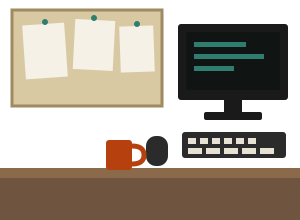
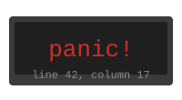

Отзыв
История одной лабораторной
«В феврале я сдал лабораторную по C — и она упала на чужом компьютере. Препод смотрел на экран, потом на меня, и сказал, что это не моя программа. Это была не моя программа: моя программа освободила буфер и пошла читать его дальше».
Два года она писала на C и Python: про segfault знала, что «это где-то там, в памяти», и на лабораторных просто перезапускала программу. На Rust первые три недели всё выглядело хуже: программа не собирается, а не падает. К концу третьей недели стало понятно, что компилятор повторяет ровно то, что раньше ловилось через месяц, — только сразу и с номером строки. Лабораторная по владению памятью на C у неё больше не воспроизводится: «компилятор не даёт».
программа падает у пользователя
программа не собирается
программу невозможно написать так, чтобы она упала
Анна — вымышленный персонаж. История собрана из типичных ситуаций эпохи, которые описывали в интервью разработчики, переходившие с C на Rust в 2015–2018 годах.


panic!
печатает номер строки и останавливает программу — это не падение по чужой
ошибке в памяти.